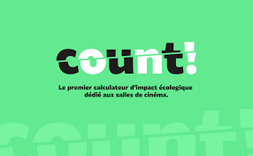

Présentation du projet COUNT
{kind=link}

Cadre du projet
COUNT est un calculateur d’empreinte écologique destiné aux salles de cinéma, lancé par le collectif Cinéma Uni pour la Transition (CUT!).
Le projet s’inscrit dans un programme soutenu par France 2030 - Alternatives vertes pour la culture, avec le soutien du Centre national du cinéma et de l’image animée (CNC). Le développement de l’outil est assuré par l’Association pour la transition bas carbone (ABC), en lien avec les acteurs du secteur cinématographique.
COUNT constitue le premier outil spécifiquement conçu pour prendre en compte les réalités opérationnelles des salles de cinéma, en intégrant notamment les enjeux liés à l’énergie, aux équipements, à la mobilité des spectateurs, à la confiserie et aux activités de fonctionnement.
Positionnement et objectifs
COUNT a pour objectif de fournir aux exploitants de salles de cinéma une estimation simplifiée et accessible de leur empreinte carbone, réalisable en moins de trente minutes. L’outil propose une approche pédagogique et opérationnelle, destinée à sensibiliser les acteurs du secteur aux enjeux environnementaux et à accompagner leurs démarches de transition.
Les résultats produits par COUNT ne se substituent pas à un Bilan Carbone® complet, mais reposent sur une compilation de données sectorielles issues notamment des travaux de Cinéo, groupement de salles indépendantes privées, ainsi que sur l’intégration de facteurs d’émission référencés dans la base de données de l’ADEME, dont certains sont inédits.
Périmètre fonctionnel
Le calculateur prend en compte plusieurs postes d’impact spécifiques à l’exploitation cinématographique, parmi lesquels :
les consommations énergétiques des bâtiments
les équipements techniques et informatiques
la mobilité des spectateurs et des équipes
les activités de confiserie et de restauration
certains flux de matières et déchets
À moyen terme, le projet prévoit une évolution vers une approche multi-critères de l’empreinte environnementale, intégrant par exemple des indicateurs de pollution au-delà des seules émissions de gaz à effet de serre (GES).
Statut de la contribution documentée
La présente documentation correspond à un travail de contribution technique et de formalisation méthodologique réalisé en appui au projet COUNT. Elle vise à décrire les choix de modélisation des données, les principes de calcul et les logiques de reproductibilité, sans constituer la documentation officielle du projet.
Ressources et références
Site officiel du projet COUNT :
https://count.cut-collectif.fr/
Référentiel méthodologique et outillage Bilan Carbone® (ABC) :